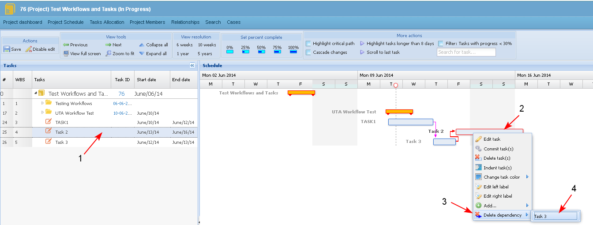
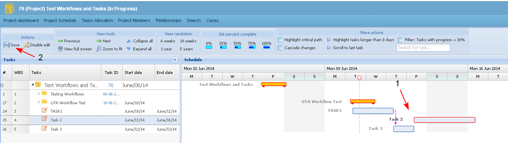

The topic describes the requirements for the action "Unlink dependent tasks" in the project timeline.
Preconditions
- Links between sub-tasks of a "Workflow" summary task could not be deleted.
- The action could not be performed for a project in status "Completed" or "Stopped".
- The user selects a task in the Gantt chart, clicks with the right mouse button on it, selects the action "Delete dependency" and chooses the linked task (1-2-3-4).

- The link between the tasks is deleted (1). The user saves the changes (2).
